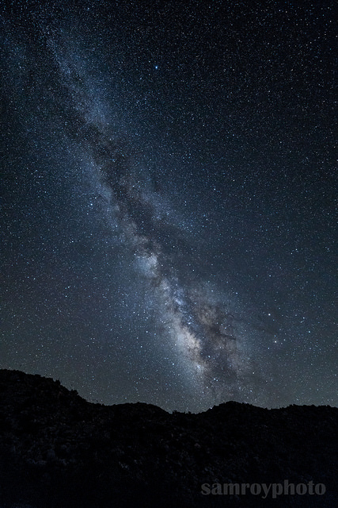
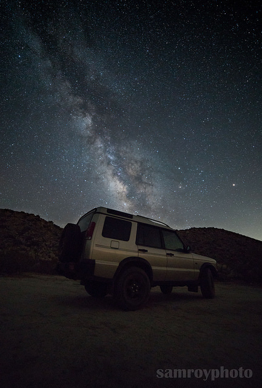

Sam Roy - CST336 LAB
NIGHT SKY PHOTOGRAPHY
Home Technicals
Overview
Some say it is difficult to take beautful pictures of the night sky. What most people don't realise is that it comes down to mastering some basic techniques.
Shutter Speed
Shutter speed is probably the most important ingrediant to an amazing photograph of the night sky. Too long and you will have blurry stars, too short and the sensor can't collect enough light. Generally you will want to use a formula: 500/focal(mm) = time(sec). For example, if you use a 20mm lens, 500/20 will equal ~ 25seconds of exposure before star trails become visible. If you would like to see a table of these recommendations, browse to my technical page here
Aperature
Aperature is another important element in star photography. Aperate dictates how wide open the lens is (this lets in more or less light). When setting up for star photo's you will want to collect the most light as possible. This involves decreasing your aperature to the minimum.
ISO
ISO is artificial light that is an advanced feature on most DSLR's. Increasing the ISO gives you a brighter exposure at the expense of more noise in your photo. Too much ISO and the image quality suffers greatly, too little ISO and you risk not seeing any stars at all! I recommend on modern cameras to use an ISO value of 3200. This varies camera to camera but this is a good starting point.